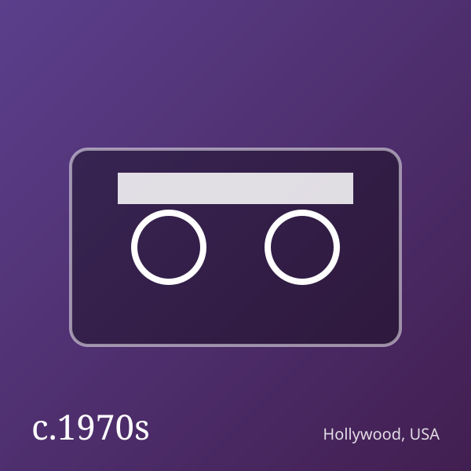

Mary Bolton's song
Ordinary people paid to have their poems turned into records; session players obliged, deadpan.

- who
- “Bobbi Blake”; lyric by Mary Bolton
- what
- “My Husband, Lover, Friend”, MSR 851
- when
- c.1970s
- where
- Hollywood, USA
For most of the twentieth century, magazines carried small ads: send us your poem and we'll make it a record. Thousands of ordinary people paid. Session musicians set the lyrics in an afternoon, a few copies were pressed, and the record usually went nowhere except the customer's front room.
MSR 851 is one of these: "My Husband, Lover, Friend", sung by "Bobbi Blake" to words by Mary Bolton. It is a stranger's own words, paid into existence and then ignored. The American Song-Poem Music Archives keeps these discs listenable.